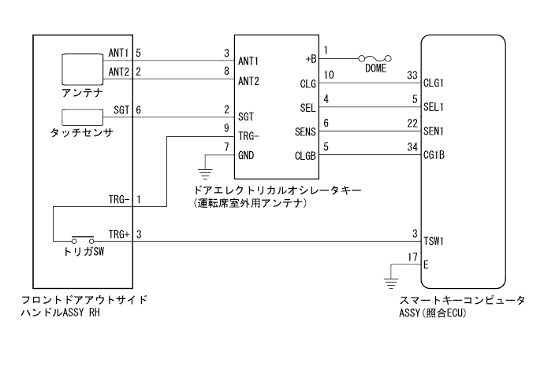
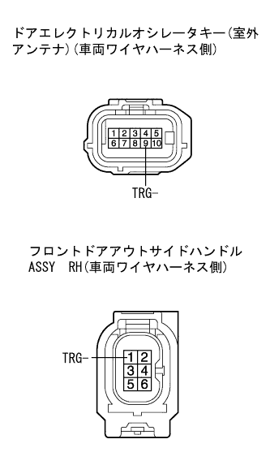
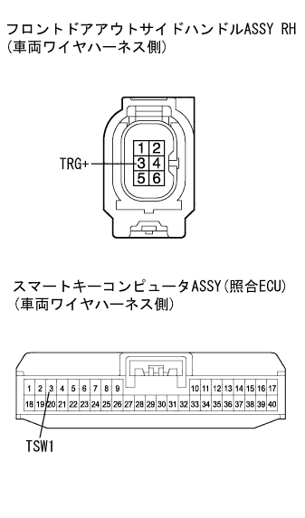
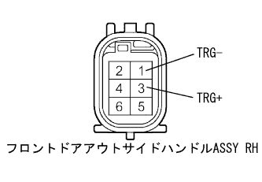

Smart Entry & Start System (Smart Entry) Smart Lock Does Not Operate from Driver Side Door Only (Unlock Operates) |

| Step 1 | Inspect Power Door Lock System |
Check that the door locks operate lock <-> unlock when the door control switch of the power window regulator master switch assembly is operated.
| Result | Proceed to |
|---|---|
| Operates normally | A |
| Does not operate normally | B |
|
| ||||
| A | |
| Step 2 | Read TaSCAN Data (D Door Trigger Switch) |
ECU Data Monitor
Using SST (TaSCAN), perform the data monitor of the certification ECU.
| Item Name [Symbol] | Item Description/Display Range | Standard Value | Remarks |
|---|---|---|---|
| D Door Trigger SW [DDTS] | Driver side door outside handle lock switch status Display range: OFF-ON | OFF: Driver side door outside handle lock switch free ON: Driver side door outside handle lock switch pushed | - |
|
| ||||
| OK | ||
| ||
| Step 3 | Inspect Wire Harness and Connector (Oscillator - Certification ECU and Door Handle) |
 |
Disconnect the door electrical oscillator key (driver side outside antenna) and front door outside handle assembly RH connectors.
Using SST (Toyota electrical tester), measure the resistance.
| Tester Connection (Oscillator - Door handle) | Condition | Standard |
|---|---|---|
| 9(TRG-) - 1(TRG-) | Always | Below 1 Ω |
 |
Disconnect the front door outside handle assembly RH and certification ECU connectors.
Using SST (Toyota electrical tester), measure the resistance.
| Tester Connection (Oscillator - Certification ECU) | Condition | Standard |
|---|---|---|
| 3(TRG+) - 3(TSW1) | Always | Below 1 Ω |
|
| ||||
| OK | |
| Step 4 | Inspect Front Door Outside Handle Assembly RH |
 |
Using SST (Toyota electrical tester), measure the resistance.
| Tester Connection | Condition | Standard |
|---|---|---|
| 3(TRG+) - 1(TRG-) | Lock switch not operated | 10 kΩ or higher |
| Lock switch pushed | Below 1 Ω |
|
| ||||
| OK | |
| Step 5 | Inspect Door Electrical Key Oscillator (Driver Side Outside Antenna) |
Replace with a new or known good door electrical oscillator key and check the operation.
|
| ||||
| OK | ||
| ||